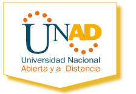

GitHub

GitHub es una plataforma de desarrollo colaborativo para alojar proyectos utilizando el sistema de control de versiones Git. Utiliza el framework Ruby on Rails por GitHub, Inc. (anteriormente conocida como Logical Awesome). Desde enero de 2010, GitHub opera bajo el nombre de GitHub, Inc. El código se almacena de forma pública, aunque también se puede hacer de forma privada, creando una cuenta de pago.
Bienvenidos a nuestra Escuela de Ciencias Básicas, Tecnología e Ingeniería de la UNAD

Misión:
La Escuela de Ciencias Básicas, Tecnología e Ingeniería, tiene como misión contribuir a la educación para todos con programas en Ciencia, Tecnología e Ingeniería en la modalidad de educación a distancia, mediante la investigación, la proyección social, estrategias educativas y organizacionales innovadoras, con la utilización de las tecnologías de la información y las comunicaciones, para formar profesionales íntegros y de calidad, capaces de responder a las necesidades del entorno local, regional y global.
Visión:
La Escuela de Ciencias Básicas, Tecnología e Ingeniería de la UNAD, se reconocerá por el impacto y calidad de sus egresados, la excelencia académica, calidad y flexibilidad de sus programas y la pertinencia con el entorno local, regional y global.
Nos vemos como una Escuela líder en la formación de profesionales en Ingeniería, Tecnología y Ciencias Básicas, con capital humano altamente capacitado, con investigación de frontera y con tecnología avanzada que permita a la UNAD ser reconocida como Megauniversidad.
Objetivos:
Los objetivos Escuela de Ciencias Básicas, Tecnología e Ingeniería, responden a los objetivos institucionales y se concretan en los siguientes objetivos específicos: